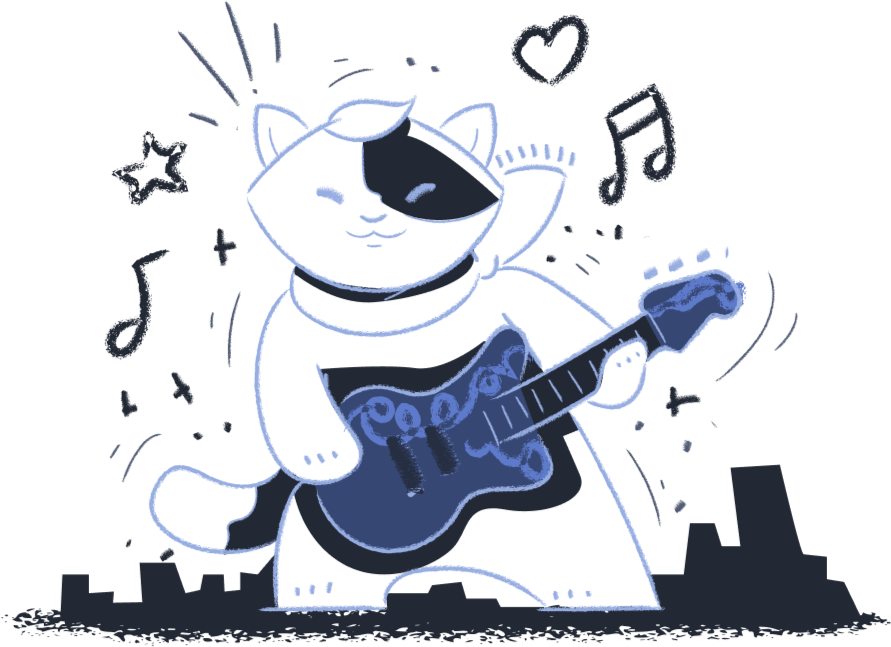

500
¡Falla Crítica del Sistema!
Lamentamos informarte que el servidor ha encontrado un error interno grave al intentar procesar tu solicitud.
El equipo de soporte técnico ha sido notificado automáticamente para su pronta reparación. Por favor, intenta de nuevo más tarde.
Volver al Inicio